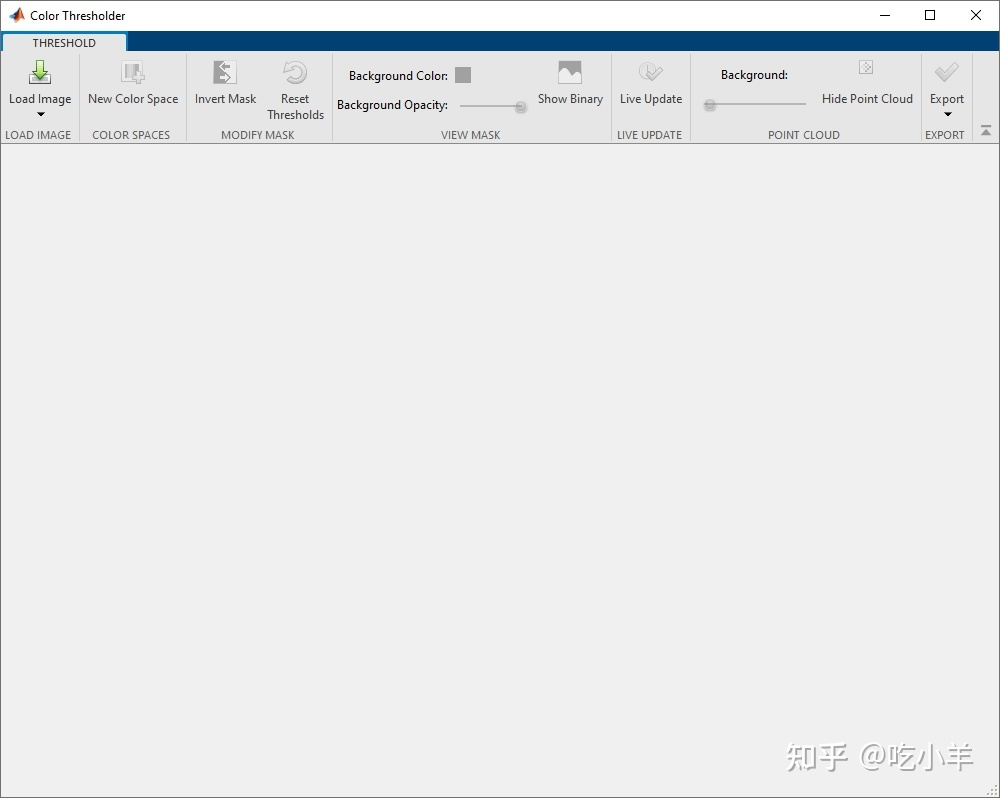

Home
本示例展示了如何使用 Color Thresholder 应用程序中的点云控件分割图像。该示例从背景中分割出人脸。
将图像加载到颜色阈值应用程序中
将图像读入工作区。对于此示例，将示例图像读mandi.tif入工作区。该图像是拜耳模式编码的图像。要处理Color Thresholder中的图像，您必须使用demosaic函数将图像转换为 RGB 图像。转换图像后，用imshow函数显示。
X = imread('mandi.tif');
rgb = demosaic(X,'bggr');
imshow(rgb)
在Color Thresholder中打开图像
从 MATLAB® 工具条中，打开应用程序选项卡，然后在图像处理和计算机视觉下，单击颜色阈值图标
，打开Color Thresholder。

要将图像载入 Color Thresholder 应用程序，请单击加载图像。因为图像已经在工作区中，所以选择从工作区加载图像选项。在从工作区导入对话框中，选择您创建的变量并单击确定。 您还可以通过指定其文件名来加载图像。
您还可以使用colorThresholder命令打开应用程序，指定要打开的图像的名称：colorThresholder(rgb)。
选择色彩空间
当它打开时，颜色阈值应用程序会显示选择颜色空间选项卡。此选项卡以几种流行的颜色空间显示图像和图像的点云表示：RGB、HSV、YCbCr 和Lab。
探索每个颜色空间中图像的点云表示。旋转每个颜色空间中的 3-D 描述，以查看颜色的区分程度。您可以从此 3-D 显示中选择要分割的颜色，因此选择一种允许您选择要分割区域的颜色的表示非常重要。对于此示例，选择Lab颜色空间。
使用颜色云分割图像
当您选择颜色空间时，应用程序会打开一个新选项卡，显示图像以及您选择的颜色空间的每个颜色分量的一组控件。对于Lab颜色空间，颜色阈值显示三个直方图，代表颜色空间中的三个分量。该选项卡还包括颜色空间中图像颜色的 3-D 点云表示。其他色彩空间使用不同类型的控件。
要浏览图像，请将光标移到图像上并使用平移和缩放控件。
要分割图像，请使用鼠标旋转 3-D 色彩云，以找到隔离要分割的颜色的色云视图。要选择图像中的颜色，请单击点云左上角的绘图工具。然后，使用鼠标在要分割的颜色周围绘制一个多边形。当您关闭多边形时，颜色阈值应用程序会根据您选择的颜色执行分割。您可以使用直方图来优化您的分割。
======================================================================
我的测试结果及程序
下面是我测试的代码：

注：本文根据MATLAB官网内容修改而成。